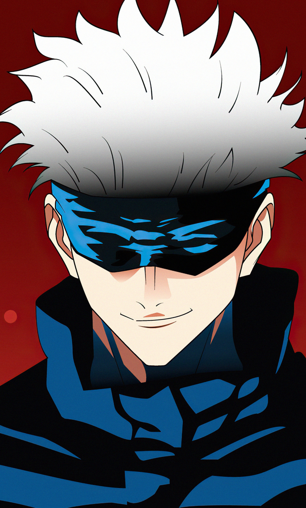

Gojo Satoru
-The Strongest
Gojo Satoru
Satoru Gojo is one of the main protagonists of the Jujutsu Kaisen series. He is a special grade jujutsu sorcerer and widely recognized as the strongest in the world. Satoru is the pride of the Gojo Family, the first person to inherit both the Limitless and the Six Eyes in four hundred years. He works as a teacher at the Tokyo Jujutsu High and uses his influence to protect and train strong young allies.
Trivia
- According to Jujutsu Kaisen Official Fanbook:
- Enrollment method: Family lineage.
- He doesn't have any hobbies (he can do almost anything).
- Favorite food: Sweet things.
- Cause of stress: Higher-ups involvement.
- Least favorite food: Alcohol.
- Gojo ranked 3rd place in the manga's 1st Character Popularity Poll with 16,923 votes.
- According to Akutami, Gojo is probably over 190 centimeters tall (6'3").[15]
- He started eating sweets to stimulate his brain but ended up with a sweet tooth.[16]
- He can do anything he tries, so he tries not to get too involved with anything. According to him, this is all for the sake of the next generation.[17]
- Gojo's face was regularly shown in the JUMP GIGA prequel: Jujutsu Kaisen 0: Jujutsu High (all four chapters).[19] He was a fan of Digimon in high school.[20]
- Both his Japanese and English voice actors have voiced Digimon characters. Kaiji Tang even mentioned Gojo liking Digimon on Twitter.[21]
- The name 'Satoru' (さとる, サトル) is a masculine Japanese given name derived from the Japanese verb meaning "to know" or "understand." Satoru can be written using different kanji characters, which mean (悟る) "be spiritually awakened" or "attain higher perception". Other name meanings include but are not limited to "enlightenment" (悟), "wisdom" (智), and "philosophy" (哲).[22] As credited by Gege Akutami, his theme music is "Mada Minu Asu Ni" by Asian Kung-Fu Generation and "Shame on Me" by Avicii.[23]